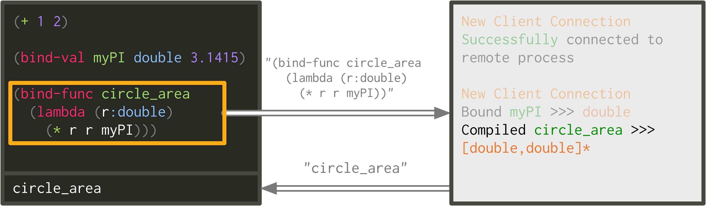
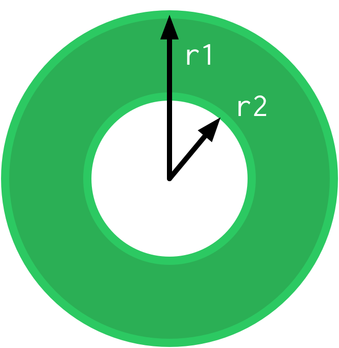
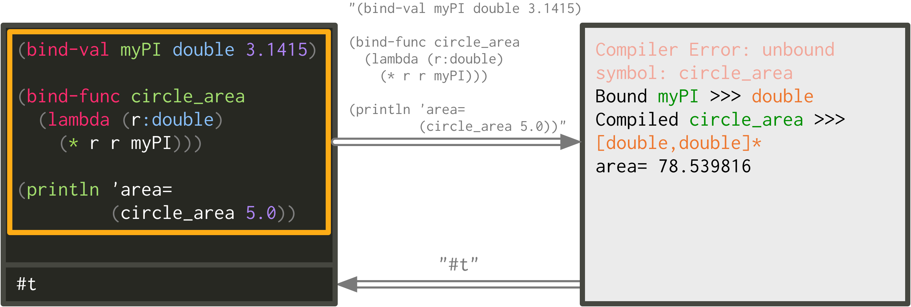

Interacting with the Extempore Compiler¶
Note
This was once a blog post—corrections/improvements welcome.
The best way to think about programming and evaluating code in Extempore
is to think of it as a compiler-as-a-service (CaaS). The compiler
(provided by the extempore executable) runs in a shell console, and
you connect to it via a TCP socket connection. When the compiler
receives any code over this connection it compiles and executes it. The
general term for this is ‘evaluating’ the code. There are some nuances
to this process, but in general the programmer interacts with a running
Extempore process over a TCP connection.
The ‘chunks’ of code (serialised as strings) which are sent to the
xtlang compiler may be anything from small one-liners to whole source
files (via the load function). The functions and data (often
referred to collectively as the environment) persist for as long as
the extempore process is running. As discussed in the
philosophy page, the Extempore compiler actually
compiles two languages: Scheme and xtlang (Extempore’s own
programming language). The process of evaluating them is the
same—just sending strings to the compiler over the TCP port.
So, to do anything in Extempore you need a text editor which can
- open up a TCP connection to the compiler
- create a string which represents a valid chunk of Scheme or xtlang code
- send that string over the TCP connection
There are already Extempore modes/plugins for Atom, Emacs, vim and Sublime Text 2 (see Text editors). If you already have a favourite text editor, then you’ll probably want to use that one. If you don’t, then Atom is probably a good choice, and setting it up is pretty easy In the end it doesn’t matter too much which editor you use, so pick the one that makes you happiest.
Running Extempore¶
Once you’ve downloaded and built Extempore you’ll
have an executable, which will be called extempore on OSX/Linux
or extempore.exe on Windows.
When you start Extempore, you need to specify an audio device. This is necessary even if you’re not planning to do any audio processing or output, because Extempore’s internal clock is driven by the audio device’s clock. This is a good thing: the audio clock will usually be more stable and accurate than your computer’s default system clock, especially if you’re using a dedicated external audio interface.
But how do we know what audio device to select? Well, the
extempore executable takes a command-line argument called
--print-devices. At a shell prompt, cd into the extempore
source directory (where the executable will be) and run
As you can see, running extempore with the --print-devices
argument prints a list of all the audio devices (input, output and
duplex) that PortAudio can find on the system. For example, in the
image there are five devices. Three devices (device index 0 to 2) are
for the built-in soundcard, and two more (device index 3 and 4) are
for Soundflower, which is a utility for routing audio between
different applications. Different computers will print different
devices—that’s ok.
In this example, you probably want to use the default laptop output,
which is audio device[2]. When you run extempore, then, I want
to pass this device index with the --device argument. The
--device argument is optional, if it’s not supplied then Extempore
will default to using whatever device is found at index 0. But it
doesn’t hurt to specify it explicitly, just to avoid any surprises.
After running extempore with --device 2, it prints some
information to stdout (sometimes referred to as the log) about
the device that it’s using. As you can see, it all looks ok: 2 channels
out, samplerate of 44100Hz. At this point, the extempore process is
running, and will keep doing so until you kill it.
Also, the compiler prints some information about “starting up some
processes”, namely a primary process on port 7099 and a
utility process on port 7098. These are the TCP ports we’ll
send our code to. A running Extempore binary can provide multiple
Extempore processes (kindof like POSIX threads) as well as
connecting to multiple other Extempore processes, potentially running
on remote hosts. This forms the basis for Extempore’s powerful
distributed processing capability. For the moment, though, you don’t
have to worry about multiple processes, just connect and interact with
the primary process.
Connecting to the Extempore compiler¶
So far, all the stuff we’ve done has been in a shell console. The
extempore process, which provides the Extempore compiler, is just
sitting there idle, waiting to be given some code to evaluate. That’s
where the text editor part of the equation comes in.
When you open up a file ending in .xtm (Extempore’s default file
extension), your editor should detect that
you’re editing Extempore source code, and load the appropriate
Extempore plugin. Here’s a (short) example file containing some
Extempore code:

The content of the file is at the top, and I’ve also included a representation of the “echo area” at the bottom. This is a part of your editor which displays information about the results of different editor commands, and may also be where the feedback from the Extempore compiler is “echoed” (printed out). It’s blank at the moment.
Now that we have
- an editor open with some Extempore code
- an Extempore (editor) plugin loaded
- the
extemporeprocess still running
we can open up the TCP connection. In Emacs, this is done with M-x
extempore-connect. In Atom, with Alt+O. In ST2, use the menu
item Tools > Extempore > Connect.... The default host and port
arguments will be localhost and 7099 respectively. If the
connection is made successfully, then Extempore will echo back the
string “Welcome to extempore!”.
Evaluating code¶
Once everything’s hooked up, then the compiler is just waiting there for
you to give it some code to evaluate. So, from a ‘blank slate’ .xtm
file, let’s start with some basic Scheme arithmetic. If you’re playing
along, you can write (+ 1 2) into your file somewhere.
This is where the ‘Compiler as a Service’ (CaaS) thing starts to get
real. Currently, the code (+ 1 2) is just text sitting in your
editor. It won’t get compiled until you send it for evaluation. The
easiest way to do this is to move your cursor somewhere inside the
code (+ 1 2) and hit Alt+S (in Atom) or C-M-x (in Emacs).
In ST2, you have to highlight the code you want to evaluate and hit
Ctrl+e. This takes the whole expression (+ 1 2) and sends it
(as a string) to the running extempore compiler.

The orange ‘box’ in the diagram indicates code that has been sent for
evaluation. See how the code string (in grey) is sent over the
connection, and the result is sent back (also as a string) and displayed
in the echo area. Nothing is printed in the console where extempore
is running. Congratulations—you’ve just evaluated your first Extempore
code!
We can write some more code to bind-val a global variable
myPI, which is an xtlang global variable of type double. If you evaluate this with Alt+S or C-M-x (or
whatever the command is in your editor) then what happens is
One difference from the previous (Scheme) example is that the
extempore compiler now prints a message to the console: Bound myPI
>>> double. Evaluating xtlang code will always print a message to
the log about the name and type of the variables. Also, notice how
the string that is echoed back is “#t”, which is the Scheme/xtlang
literal for boolean true. This is what the compiler returns if the
value is ‘bind-val‘ed successfully. It’s worth observing that
what the extempore compiler prints to the log isn’t the same as the
result it echoes back to the editor over the TCP connection.
How about compiling an xtlang closure?
circle_area is an xtlang closure which takes a (double) argument
representing the radius of a circle and returns the area of that circle
(another double). It also uses the global variable myPI which we
evaluated earlier. The closure compiled successfully, and the compiler
prints Compiled circle_area >>> [double,double]* to the log. If
there was a problem with the compilation, then the compiler would have
printed a (hopefully helpful) compile error to the log instead.
Let’s find out the area of a circle of radius 5.0 units. We need to
call circle_area with the argument 5.0.
When we evaluate the (circle_area 5.0) expression, a couple of
things happen. The code is sent to the compiler, which returns the
value 78.539816 to the editor. In addition, a message about
creating a new memory zone is printed to the log.
That’s because this is the first time we’ve called some xtlang code,
and so a memory zone needs to be set up to provide any zalloc
memory. This zone allocation won’t happen if we evaluate the same code
again, because the default zone already exists. The compiler in this
‘created default zone’ message is just telling us helpful things about
the state of our Extempore world.
As another example of the difference between the return value of an xtlang expression and any side effects it may introduce, have a think about how you would get the circle’s area printed to the log view, rather than returned and shown in the echo area.
The answer: we can wrap the call to the circle_area closure in a
call to println. println is a built-in function which prints (to
the log) a string representation of whatever arguments it is passed.

This time, the result (78.539816) is printed to the log. And the
result returned to the editor is different, too—it’s now #t. That’s
because the println function returns a value, indicating whether it
was successful in printing its arguments to the log or not. The actual
printing is a ‘side effect’ of the println function—behaviour that
happens during the course of the function’s execution.
As a final basic example, we can send code to the compiler more than ‘one closure at a time’. Let’s write another closure, this time for figuring out the area of a ‘doughnut’
Because we already have a closure (circle_area) for figuring out the
area of a circle, it makes sense to use that closure in our
doughnut_area closure. The area of the doughnut is the area of the
outer circle (radius r1) minus the area of the inner circle (radius
r2).

See how this time both the definition of the doughnut_area closure
and the call (doughnut_area 5.0 2.5) are sent to the compiler in the
same ‘chunk’, meaning that they were both highlighted in the editor
before giving the evaluation command. The results of this evaluation
indicate that the two parts of the code were both evaluated
successfully: the doughnut_area closure compiled successfully, and
the result 58.904862 was returned to the editor.
The power (and danger) of CaaS¶
Thus we’ve only evaluated code in the order it appears
in the file. Closures which use other closures or globals have all
worked fine. But when we kill the extempore process (i.e. with
SIGINT), the Extempore environment we’ve ‘built up’ isn’t saved—it’s
destroyed.
After restarting the extempore process above, and reconnecting the
editor to it, let’s try compiling the doughnut_area closure first:

The circle_area closure isn’t there anymore, and so the compiler
throws an error (and no value is returned to the editor). Because the
compiler is a ‘service’, it’ll just evaluate the code and build up the
environment in whatever order you throw code at it. The source code
isn’t necessarily a linear representation of the evolution of the
environment—it all depends on the ‘evaluation trajectory’ that you take
through the code.
So, if we go back and evaluate all the necessary code, everything works properly
One other thing you can do is redefine the behaviour of existing
functions and variables. For example, say we wanted to change our
circle_area function to use an ancient Egyptian approximation for
the area of a circle described on the Rhind papyrus (c. 1800BC).
In the editor, change the code for the circle_area closure and
re-evaluate:
The result is (slightly) different, but not too far off—not bad for a
4000 year old formula. But the main thing is that the code to call
circle_area didn’t change—only the definition did. The new closure
definition has to have the same signature as the old one, so that any
code which calls the existing closure will still work ok (type-signature
wise). This re-configurability in the behaviour of the code lies at the
heart of live coding, a practice which has informed much of the
design of Extempore.
This should be a serious challenge to any notion you may have had about the source code being the canonical definition of how an Extempore ‘program’ behaves. In live programming, the programmer is constantly both building new code and data structures, and also redefining and re-evaluating old bits of code to fit better with the current execution and environmental context. There are lots of deep implications of this way of thinking about programming, and I won’t go into them here, but hopefully this has been helpful for thinking about what programming in Extempore looks like.
Now, if you want to code everything up in source files which are
evaluated linearly from start to finish (e.g. with a call to load)
then you can still do that, too. All of the Extempore libraries
(including those for DSP and graphics) work that way, and Extempore
still works great in that paradigm. But you have the ability to dive in
and change things if you need to, and that opens up some interesting
possibilities.
This is really just the tip of the compiler-as-a-service (CaaS) iceberg. Extempore’s CaaS will also let you do things like query for all bound symbols, print all closures of a particular signature type, return the abstract syntax tree of a particular closure, etc… In fact the Extempore compiler itself is fully runtime modifiable!